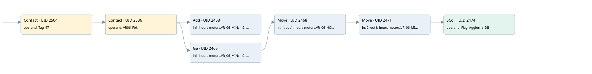

vr-06
time work motor · 검색 색인 순서 42 · 원본 내부 NID 추정 45
백업 PLF 원본의 2895738 바이트 위치에서 복원한 XML. 검색 문서 1043의 객체 키 161022004e12000000000000와 연결했다. 이름 해석 12/12개. 남은 RefId는 상수 또는 미해석 참조다.
연결 구조 다시 그리기
원본 Part/PCon/Wire를 이용한 연결도다. TIA 화면의 래더 배치 또는 실행 결과를 재현한 그림은 아니다. 핀 연결은 아래 표와 원본 XML을 기준으로 읽는다. 노드 위에 마우스를 두면 피연산자 이름을 볼 수 있다.

접점·코일·블록과 피연산자
| Part UID | Gate | Negated 핀 | 연결 피연산자 |
|---|---|---|---|
| 2504 | Contact | operand = Tag_47 | |
| 2506 | Contact | operand = VR06_Fbk | |
| 2458 | Add | in1 = hours motors.VR_06_MIN; in2 = 1; out = hours motors.VR_06_MIN | |
| 2465 | Ge | in1 = hours motors.VR_06_MIN; in2 = 60 | |
| 2468 | Move | in = 1; out1 = hours motors.VR_06_HOUR | |
| 2471 | Move | in = 0; out1 = hours motors.VR_06_MIN | |
| 2474 | SCoil | operand = Flag_Aggiorna_DB |
접점 경로를 펼친 조건식
Contact·O/A·비교기의 원본 연결을 읽기 쉽게 펼친 보조 해석이다. POWER는 전원 레일 시작을 뜻한다. 호출 블록·에지·타이머의 내부 동작과 다중 쓰기 순서는 이 표로 실행 검증하지 않았다. 미해석 핀과 RefId는 원문 연결표에서 확인한다.
| UID | 동작 | 대상 | 원본 접점 경로 | 내용 |
|---|---|---|---|---|
| 2468 | Move | hours motors.VR_06_HOUR | ((Tag_47 AND VR06_Fbk) AND [hours motors.VR_06_MIN >= 60]) | Move 입력 1 |
| 2471 | Move | hours motors.VR_06_MIN | Move UID 2468.eno (블록 동작 확인) | Move 입력 0 |
| 2474 | SCoil | Flag_Aggiorna_DB | Move UID 2471.eno (블록 동작 확인) | 조건 성립 시 Set |
원본 배선 연결
| Wire UID | 동일 Wire 연결 끝점 |
|---|---|
| 2508 | Powerrail {} ↔ Part 2504.in |
| 2487 | ORef 2475 (Tag_47) ↔ Part 2504.operand |
| 2505 | Part 2504.out ↔ Part 2506.in |
| 2488 | ORef 2476 (VR06_Fbk) ↔ Part 2506.operand |
| 2507 | Part 2506.out ↔ Part 2458.en ↔ Part 2465.pre |
| 2489 | ORef 2477 (hours motors.VR_06_MIN) ↔ Part 2458.in1 |
| 2490 | ORef 2478 (1) ↔ Part 2458.in2 |
| 2491 | Part 2458.out ↔ ORef 2479 (hours motors.VR_06_MIN) |
| 2492 | ORef 2480 (hours motors.VR_06_MIN) ↔ Part 2465.in1 |
| 2493 | ORef 2481 (60) ↔ Part 2465.in2 |
| 2494 | Part 2465.out ↔ Part 2468.en |
| 2496 | ORef 2482 (1) ↔ Part 2468.in |
| 2498 | Part 2468.eno ↔ Part 2471.en |
| 2497 | Part 2468.out1 ↔ ORef 2483 (hours motors.VR_06_HOUR) |
| 2499 | ORef 2484 (0) ↔ Part 2471.in |
| 2501 | Part 2471.eno ↔ Part 2474.in |
| 2500 | Part 2471.out1 ↔ ORef 2485 (hours motors.VR_06_MIN) |
| 2502 | ORef 2486 (Flag_Aggiorna_DB) ↔ Part 2474.operand |
식별자 해석 근거 12개
| ORef UID | RefId | 이름 | IdentXmlPart 파일 | 해석 방법 |
|---|---|---|---|---|
| 2475 | 1 | Tag_47 | 0613-IdentXmlPart.xml | UID/RID + search-text + NID agreement |
| 2476 | 272 | VR06_Fbk | 0613-IdentXmlPart.xml | UID/RID + search-text + NID agreement |
| 2477 | 274 | hours motors.VR_06_MIN | 0615-IdentXmlPart.xml | UID/RID + search-text + NID agreement |
| 2478 | 7 | 1 | 0616-IdentXmlPart.xml | literal candidate: UID/RID/NID + nearby named declarations + search-text agreement |
| 2479 | 274 | hours motors.VR_06_MIN | 0615-IdentXmlPart.xml | UID/RID + search-text + NID agreement |
| 2480 | 274 | hours motors.VR_06_MIN | 0615-IdentXmlPart.xml | UID/RID + search-text + NID agreement |
| 2481 | 8 | 60 | 0616-IdentXmlPart.xml | literal candidate: UID/RID/NID + nearby named declarations + search-text agreement |
| 2482 | 7 | 1 | 0616-IdentXmlPart.xml | literal candidate: UID/RID/NID + nearby named declarations + search-text agreement |
| 2483 | 276 | hours motors.VR_06_HOUR | 0615-IdentXmlPart.xml | UID/RID + search-text + NID agreement |
| 2484 | 12 | 0 | 0616-IdentXmlPart.xml | literal candidate: UID/RID/NID + nearby named declarations + search-text agreement |
| 2485 | 274 | hours motors.VR_06_MIN | 0615-IdentXmlPart.xml | UID/RID + search-text + NID agreement |
| 2486 | 13 | Flag_Aggiorna_DB | 0613-IdentXmlPart.xml | UID/RID + search-text + NID agreement |
검색 코드 보조 자료
참조 명칭을 찾기 위한 자료이며 실행 순서나 AND/OR 관계는 위 연결표로 확인한다.
"tag_47" "vr06_fbk" add "hours motors".vr_06_min 1 "hours motors".vr_06_min 60 move 1 move 0 "flag_aggiorna_db" "hours motors".vr_06_hour "hours motors".vr_06_min "hours motors".vr_06_min